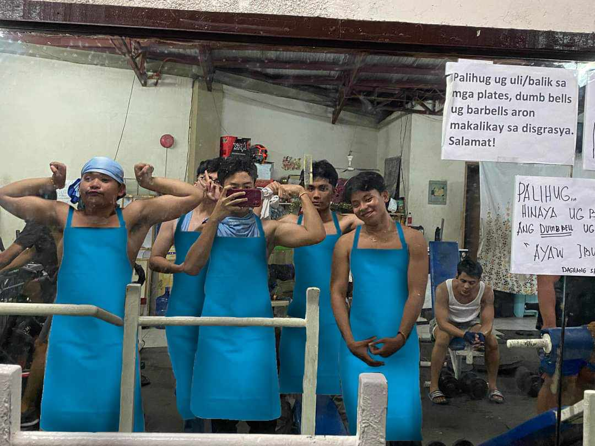

Chef's Profile:
At the helm of our kitchen is Chef harold, a visionary culinary maestro whose expertise and creativity elevate every dish to extraordinary heights. With over [X] years of experience in the art of Chinese cooking, Chef harold brings a wealth of knowledge and innovation to our kitchen. Trained in the culinary traditions of cebu city, Chef harold infuses each creation with a blend of traditional techniques and contemporary flair, ensuring that every bite is a symphony of flavors and textures.
MEET THE CREW
Restaurant Philosophy:
At DiningSI, we believe in the power of food to unite, inspire, and delight. Our philosophy is simple: to honor the rich tapestry of Chinese culinary heritage while delivering an unparalleled dining experience marked by warmth, hospitality, and impeccable service. From sourcing the freshest ingredients to upholding time-honored recipes, we are unwavering in our commitment to authenticity. Whether you're savoring a classic dim sum spread or indulging in a modern reinterpretation of a beloved dish, each culinary creation embodies our dedication to quality, integrity, and the pursuit of culinary excellence. Join us at [Restaurant Name] and experience the true essence of Chinese cuisine, where every meal is a celebration of flavor, culture, and heartfelt hospitality.